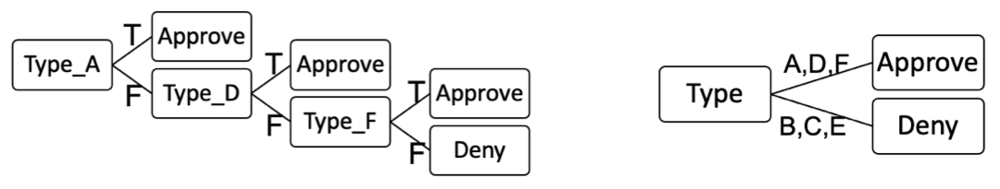

- 特徴量 4 個 → 5,016 個Banknote（1,372 点）の 4 つの数値の特徴量を、先行研究の方法で二値化したときの特徴量の数（論文 Table 1）。提案法は 4 つのまま扱う。
- 時間切れ → 5.82 秒Banknote で、学習データを全部正しく分ける最小の深さ（4）の木を求めた時間。二値化してから解く Avellaneda の SAT の方法は、30 分の制限時間内に求められなかった。
- 深さ 6 でも解なし → 深さ 4Protease Cleavage（/4）で、カテゴリの値の部分集合で枝分かれさせると深さ 4 の木が 0.69 秒で見つかった。二値の枝分かれでは、深さ 6 では解がないと示したところで時間切れになった。
厳密に最適な決定木を求める方法の多くは二値の特徴量を前提にし、数値やカテゴリの特徴量を二値化すると特徴量の数が大きく増える
CART、ID3、C4.5 などの貪欲法は木の質を保証しない。そこで、木全体を厳密な最適化で決める研究が増えてきた。目的は大きく 2 つに分かれる。1 つは学習データを全部正しく分けたうえで木の大きさ（深さかノードの数）を最小にするもの（Bessiere ら 2009、Narodytska ら 2018、Avellaneda 2020）、もう 1 つは深さの上限のもとで正しく分類できる学習データの数を最大にするもの（BinOCT、DL8.5、Hu ら 2020、Verhaeghe ら 2020 など）である。
これらの多くは二値の特徴量しか扱えず、一部は 2 クラスの分類に限られる。実際のデータの多くは数値やカテゴリの特徴量を含むので、前処理で二値の特徴量に置き換える。論文が比較に使った Avellaneda の方法では、\(v\) 種類の値をとる特徴量を \(v\) 個の二値の特徴量で表す。数値の特徴量なら、それぞれの二値の特徴量は「値があるしきい値より大きいか」を表す。たとえば値が 1、3、4、5 の 4 点なら、「1 より大きいか」「3 より大きいか」「4 より大きいか」の 3 つの二値の特徴量になる。値の種類が多いデータでは特徴量の数が大きく増え、論文はこれが性能を下げる原因になりうると指摘する。
| データ | 点の数 \(|X|\) | 数値 | 二値 | カテゴリ | 二値化後の特徴量 | クラス数 |
|---|---|---|---|---|---|---|
| Banknote | 1,372 | 4 | 0 | 0 | 5,016 | 2 |
| Breast Cancer | 116 | 9 | 0 | 0 | 891 | 2 |
| Ionosphere | 351 | 32 | 2 | 0 | 8,114 | 2 |
| Vertebral Column | 310 | 6 | 0 | 0 | 1,741 | 2 |
| Wine | 178 | 13 | 0 | 0 | 1,263 | 3 |
| Credit Approval | 653 | 6 | 4 | 5 | 1,130 | 2 |
| Promoter | 106 | 0 | 0 | 57 | 228 | 2 |
| Car | 1,728 | 6 | 0 | 0 | 15 | 2 |
| Monk2 | 169 | 4 | 2 | 0 | 11 | 2 |
表1 実験に使った UCI のデータの一部（論文 Table 1 から抜粋）。論文は 15 個のデータ（行を 4 分の 1 に減らした Protease Cleavage を含めて 16 行）を、主に数値（N）、主にカテゴリ（C）、二値に近い（B: Car と Monk2）に分けている。
しきい値は変数にせず、特徴量の値で並べた隣どうしの点が逆向きに分かれないことだけを節で書く
木の形（ふつうは深さ \(d\) の完全二分木）は先に決めておき、各分岐ノードで使う特徴量、各点の行き先、各葉のラベルを真偽の変数で表す。
- \(a_{t,j}\)：分岐ノード \(t\) で特徴量 \(j\) を使うか。各ノードでちょうど 1 つが真になるよう節を置く。
- \(s_{i,t}\)：点 \(i\) がノード \(t\) を通るとき、左の子へ行くか。
- \(z_{i,t}\)：点 \(i\) が葉 \(t\) に着くか。
- \(g_{t,c}\)：葉 \(t\) にラベル \(c\) を付けるか。各葉に付くラベルは高々 1 つである。
要になるのは、しきい値そのものを表す変数を持たないことである。特徴量 \(j\) の値で点を昇順に並べ、隣り合う点の対の集合を \(O_j\) とする。ノード \(t\) で特徴量 \(j\) を使うなら、値の大きい点が左へ行くときは値の小さい点も左へ行く（式 3）。値が等しい対については、逆向きにも同じ制約を置く（式 4）。
これで、左へ行く点は並びの先頭から続く一まとまりになり、しきい値で分けたのと同じ形になる。しきい値は解が求まってから、左へ行った点の最大の値として読み出す。ほかに、点がたどる経路と葉の対応を表す節と、探索を絞るための冗長な節（値が最小の点は必ず左、最大の点は必ず右）を加える。
（解説者の注）特徴量を選ぶ変数 \(a_{t,j}\) の数は、分岐ノードの数と元の特徴量の数の積で決まり、二値化したときのように値の種類の数だけ増えることはない。式 3 の節は分岐ノード 1 つと特徴量 1 つにつき、隣り合う点の対の数（\(|X|-1\) 個）だけ置かれる。
同じ符号化に節を足し、最小の深さの問題は SAT を深さ 1 から順に解き、精度最大の問題は部分 MaxSAT で解く
最小の深さの問題（論文の Problem 1）は、学習データを全部正しく分ける完全二分木のうち深さが最小のものを求める。点 \(i\) が葉 \(t\) に着くなら、その葉のラベルは点の正解ラベル \(\gamma(x_i)\) でなければならない、という節を加える。Avellaneda の方法にならって深さ 1 から 1 ずつ深くし、最初に充足可能になった深さが最小の深さである。
精度最大の問題（Problem 2）は、深さ \(d\) を決めた完全二分木で、正しく分類できる学習データの数を最大にする。点 \(i\) を正しく分類したことを表す変数 \(p_i\) を加え、ここまでの節をすべて必ず満たす節（ハード節）にする。そのうえで、点ごとに満たせなくてもよい節（ソフト節）\((p_i)\) を置き、満たすソフト節の数を最大にする部分 MaxSAT として解く。
実装では、最小の深さの問題は SAT ソルバー MiniSAT をもとに C++ で書き、精度最大の問題は MaxSAT ソルバー Loandra で解いた。どちらもラベルの変数 \(g_{t,c}\) をクラスの数だけ持つので、3 クラス以上の分類もそのまま扱える。
カテゴリの特徴量では、値の部分集合を左へ送る枝分かれを許し、one-hot の木より浅いか同じ深さの木を必ず表せるようにする
順序のないカテゴリの特徴量を one-hot の二値の特徴量に置き換えると、カテゴリを 1 つずつ確かめる分岐が続き、木が深くなりやすい。論文は選んだカテゴリの部分集合を左へ、残りを右へ送る枝分かれ（power set branching）を加える。取引の種類 A〜F のうち A、D、F を承認する例では、one-hot の木は深さ 3 になるが、部分集合で分ける木は深さ 1 で済む（図2）。

符号化の変更は小さい。値の順序で分ける式 3 を数値の特徴量だけに限り、カテゴリの特徴量には「同じカテゴリの点は同じ向きに行く」という節（論文の式 17 と式 18）を置く。「最小の値は左」の冗長な節は、カテゴリでは任意に決めた 1 つのカテゴリを左へ送る節に変え、「最大の値は右」の節は数値の特徴量だけに残す。左へ送るカテゴリの集合は、解が求まってから、左へ行った点が持つカテゴリとして読み出す。
one-hot の木の分岐「カテゴリ \(c\) か」は、部分集合 \(\{c\}\) を右へ、残りを左へ送る分岐に置き換えられる。したがって one-hot の木はどれも、同じ形の部分集合の木で同じ予測を表せる（論文の命題 1）。ここから、最小の深さは one-hot の場合と同じか小さく、同じ深さで達成できる精度は同じか高い（系 6、系 7）。
数値の特徴量のデータでは Avellaneda の方法より速いか同等で、相手が 30 分で解けなかった 3 つのデータでも最小の深さの木を求めた
最小の深さの問題で、二値化したデータに Avellaneda の SAT の方法（ソルバーは同じ MiniSAT）を使う場合と比べた。制限時間は Avellaneda の実験にならって 30 分である。時間切れの場合の「T/O [\(d\)]」は、時間切れの時点で深さ \(d\) の SAT 問題を解いていたことを表す。計算機は 12 コアの Intel E5-2697v2 を 2 つ、メモリは 128GB である。
| データ | 最小の深さ | 提案法（秒） | Avellaneda（秒） |
|---|---|---|---|
| Banknote | 4 | 5.82 | T/O [4] |
| Breast Cancer | 4 | 6.59 | T/O [4] |
| Cryotherapy | 4 | 0.08 | 0.24 |
| Immunotherapy | 4 | 0.18 | 1.3 |
| Ionosphere | ? | T/O [4] | T/O [3] |
| Iris | 4 | 0.04 | 0.17 |
| User Knowledge | 5 | 1.31 | 59.44 |
| Vertebral Column | 5 | 87.35 | T/O [5] |
| Wine | 3 | 0.11 | 14.75 |
| Car | 8 | T/O [8] | 89.1 |
| Monk2 | 6 | 2.73 | 0.28 |
表2 最小の深さの問題の結果（論文 Table 2）。Car と Monk2 は二値に近いデータ（B）。
数値の特徴量のデータでは、提案法はどれでも Avellaneda の方法と同等以上の速さで、多くの場合は大きく速かった。Banknote、Breast Cancer、Vertebral Column では、Avellaneda の方法は時間切れになったが、提案法は最小の深さの木を求めた。Ionosphere では両方が時間切れになったものの、提案法は深さ 3 では解がないことまで示し、Avellaneda の方法が示したのは深さ 2 までだった。一方、二値に近い Car と Monk2 では Avellaneda の方法のほうが速く、Car では提案法が時間切れになった。
精度最大の問題でも、数値の特徴量のデータでは二値化して解く MaxSAT と CP の方法より速いか同じで、誤りの数も同じか少なかった
深さ 2、3、4 の木で、Hu らの MaxSAT の符号化（ソルバーは同じ Loandra）と Verhaeghe らの CP のモデル（ソルバーは OscaR）と比べた。制限時間は Hu らにならって 15 分である。コストは正しく分類できなかった学習データの数で、最適性を証明できた場合は最適なコスト、時間切れの場合はそれまでに見つけた最良の解のコストを示す。
| データ（深さ 3） | 提案法 | MaxSAT（Hu ら） | CP（Verhaeghe ら） | 提案法（秒） | MaxSAT（秒） | CP（秒） |
|---|---|---|---|---|---|---|
| Banknote | 23 | 550 | 100 | 105.79 | T/O | T/O |
| Breast Cancer | 9 | 25 | 12 | 242.16 | T/O | T/O |
| Cryotherapy | 1 | 1 | 1 | 0.73 | 17.57 | 27.39 |
| Immunotherapy | 4 | 4 | 4 | 3.81 | T/O | 146.45 |
| Ionosphere | 21 | 186 | 29 | T/O | T/O | T/O |
| Vertebral Column | 32 | 44 | 42 | T/O | T/O | T/O |
| Car | 182 | 182 | 182 | T/O | T/O | 5.99 |
| Monk2 | 42 | 42 | 42 | T/O | 826.31 | 3.6 |
表3 精度最大の問題で深さ 3 の結果（論文 Table 3 から深さ 3 の行を抜粋）。左の 3 列がコスト（誤りの数）、右の 3 列が時間。
数値の特徴量のデータでは、提案法は相手より速く解を求めるか、すべての方法が時間切れになるかのどちらかで、コストはどれでも相手と同じか小さかった。深さ 4 では、提案法は Banknote と Breast Cancer で誤りのない木をそれぞれ 18.98 秒と 20.79 秒で求めた。同じ設定で、MaxSAT はコスト 88 と 18、CP は 100 と 11 の解までしか求められなかった。比べた 2 つの方法は 2 クラスの分類しか扱えないので、3 クラス以上の Iris、User Knowledge、Wine は提案法だけが解き、どれも数秒で最適な木を求めた。Wine では深さ 3 で学習データを全部正しく分けた。二値に近い Car と Monk2 では提案法が劣り、深さ 3 と 4 で時間切れになった。それでも、Car ではどの深さでも、Monk2 では深さ 2 と 3 で最適な解を見つけていた。
部分集合の枝分かれは精度最大の問題のすべての設定でコストが最も低く、メモリの使用量も提案法が最も少なかった
カテゴリの特徴量が多い 4 つのデータ（Protease Cleavage の行を 4 分の 1 に減らしたものを含めて 5 つ）で、部分集合の枝分かれを使う Ours-PS、使わない Ours、比べた方法を並べた。最小の深さの問題は、どの方法でもほとんどのデータが時間内に解けなかった。ただし Protease Cleavage（/4）では、Ours-PS が深さ 4 の木を 0.69 秒で見つけた。二値の枝分かれの Ours は深さ 6 では解がないと示したところで時間切れになった。Promoter はどの方法でも最小の深さが 4 で、時間は Ours-PS が 224.22 秒、Ours が 498.3 秒、Avellaneda の方法が 87.69 秒だった。
| データ（深さ 4） | Ours-PS | Ours | MaxSAT（Hu ら） | CP（Verhaeghe ら） |
|---|---|---|---|---|
| Credit Approval | 60 | 65 | 74 | エラー |
| Protease Cleavage | 39 | 98 | 136 | 100 |
| Protease Cleavage（/4） | 0 | 37 | 40 | 17 |
| Promoter | 0 | 0 | 0 | 0 |
| Soybean Large | 35 | 45 | – | – |
表4 カテゴリの特徴量のデータで、精度最大の問題を深さ 4 で解いたときのコスト（論文 Table 5 から深さ 4 の行を抜粋）。Soybean Large は 15 クラスなので、比べた 2 つの方法では解けない。Credit Approval の CP は、実行時にエラーが出たと論文にある。
精度最大の問題では、論文の Table 5 のどの設定でも Ours-PS のコストが最も低く、ほとんどの設定では、ほかのすべての方法を下回った。ただし Ours-PS は多くの設定で時間切れになっており、コストは最良の解の値である。たとえば Protease Cleavage では深さ 3 のコスト（101）が深さ 2（98）より高い（解説者の注）。
各方法のメモリの最大使用量も記録した。数値の特徴量のデータでは、最小の深さの問題で提案法の平均が 142.02MB、最大が 1,003.86MB で、Avellaneda の方法は平均 4,527.80MB、最大 16,684.36MB だった。精度最大の問題では提案法が平均 236.34MB、最大 1,299.09MB で、Hu らの方法は最大 10,994.48MB、Verhaeghe らの方法は最大 2,381.50MB だった（論文 Table 6）。どの区分でも提案法（Ours）の平均と最大が最も小さく、カテゴリのデータでは Ours-PS が 2 番目に小さかった。
SAT・MaxSAT で最適な木を求める系統の問題設定を引き継ぎ、二値化の前処理をなくして数値とカテゴリの特徴量を符号化の中で直接扱う
- 問題設定：最小の深さの問題は Avellaneda（2020）と同じ設定で、深さを 1 ずつ増やす解き方も同じである。精度最大の問題は Hu ら（2020）や Verhaeghe ら（2020）、DL8.5 と同じ設定である。木の大きさを最小にする研究の出発点として、Bessiere ら（2009）と Narodytska ら（2018）を挙げている。
- 特徴量の扱い：これらの先行研究は二値の特徴量を前提にし、数値やカテゴリの特徴量は前処理で二値化する。この論文は値の順序を隣どうしの節で表すことで、数値の特徴量を二値化せずに扱う。カテゴリの特徴量を整数計画で扱った Günlük ら（2021）に対して、数値とカテゴリの両方を 1 つの符号化で直接扱う点を違いに挙げている。
- クラスの数：Hu らや Verhaeghe らの方法は 2 クラスに限られるが、この符号化は葉のラベルの変数をクラスの数だけ持つので、多クラスの分類もそのまま解ける。
- 弱いところ：もともと二値に近いデータ（Car、Monk2）では、二値の特徴量を前提にした方法のほうが速かった。論文は今後の課題に、最小サポートなどの制約の追加、別の目的関数、木の形の選び方、アンサンブルへの利用、決定集合への拡張を挙げている。
（解説者の注）雑誌版（Constraints 2023）の題名は “SAT-based optimal classification trees for non-binary data” で、文献リストの表ではこちらを載せている。雑誌版で何が加わったかは、本文を確認していないのでこのページでは扱わない。
@article{shati2023satbased,
title = {{SAT}-based optimal classification trees for non-binary data},
author = {Shati, Pouya and Cohen, Eldan and McIlraith, Sheila A.},
journal = {Constraints},
volume = {28},
number = {2},
pages = {166--202},
year = {2023},
doi = {10.1007/s10601-023-09348-1}
}
@inproceedings{shati2021satbased,
title = {{SAT}-Based Approach for Learning Optimal Decision Trees with Non-Binary Features},
author = {Shati, Pouya and Cohen, Eldan and McIlraith, Sheila},
booktitle = {27th International Conference on Principles and Practice of Constraint Programming (CP 2021)},
editor = {Michel, Laurent D.},
series = {Leibniz International Proceedings in Informatics (LIPIcs)},
volume = {210},
pages = {50:1--50:16},
publisher = {Schloss Dagstuhl -- Leibniz-Zentrum f{\"u}r Informatik},
year = {2021},
doi = {10.4230/LIPIcs.CP.2021.50}
}
ページの内容と数値は会議版（LIPIcs, CP 2021, paper 50, CC BY 4.0）による。雑誌版（Springer）の本文は確認していない。雑誌版の書誌は Crossref、会議版の書誌は DataCite と論文の表記による。所属は会議版の表記である。